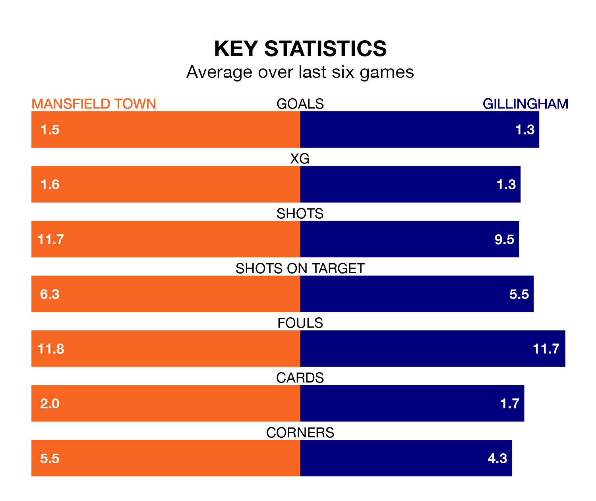

Mansfield Town are heavy favourites to keep all three points at home in Saturday's kick-off against Gillingham.
The Stags, who sit second in EFL League Two with 44 games played, are priced at 1.6 to seal victory at the One Call Stadium.
Sitting eight places and 19 points behind them in the table, Gillingham are 5.5 to win with *Betting Company*, while the draw is at 3.8.
With 87 goals in 44 games so far this season, Mansfield are the league's third-highest scorers with 2.0 goals per game. And they are conceding fewer than average, letting in 45 goals at a rate of 1.0 per game.
Gillingham, meanwhile, are below average scorers, with 1.0 goal per game, compared to a league average of 1.5. They have conceded 1.2 goals per game.
In Christy Pym, Town can rely on one of the league's safest pair of hands. He has kept 14 clean sheets in his 44 appearances this season, and only two other 'keepers – Stockport County's Ben Hinchiffe and AFC Wimbledon's Alex Bass – have been able to prevent the opposition scoring on more occasions in EFL League Two.
In the Gills's net, Jake Turner has 12 clean sheets in 35 games. He has conceded a goal every 81 minutes, 10% more often than the 92 minutes between goals for Pym.
In the last three years, Mansfield and Gillingham have played each other on three occasions. Mansfield won two of them and they drew once.
Their last meeting was on September 30, when they played out a 1-1 draw.
The Stags are in mixed form in EFL League Two, with three wins and a draw from their last six games.
With two wins and two draws over that period, the away team's form is slightly worse – they have taken eight points from 18, compared to the hosts' 10.
Mansfield's last match was on Tuesday, a 2-1 win against Accrington Stanley, with George Maris and Stephen Quinn getting the goals for the Stags.
Gillingham beat Barrow 3-0 last time out, on April 13, with Connor Mahoney, Josh Andrews and Rory Feely (own goal) on the scoresheet.
Updated: 15:40 (UTC), 18/04/24